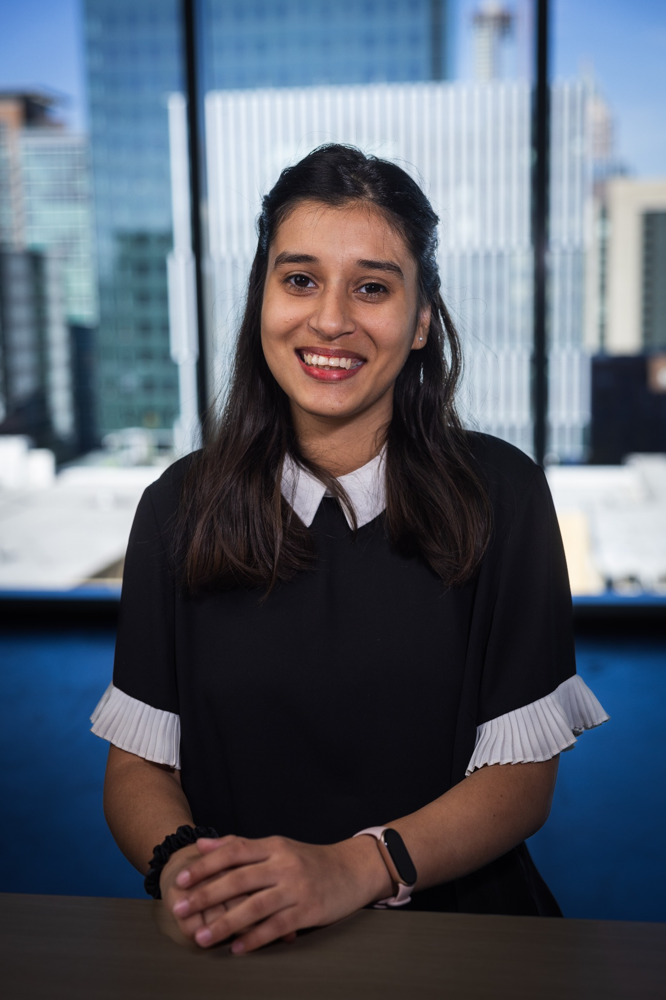

Umme Ammara
Research Affiliate · Georgia Institute of Technology
I study how people experience and use technology, with a focus on human-computer interaction, responsible AI, and healthcare. I’m interested in designing technologies that support people’s needs and account for the social contexts in which they are used, particularly in under-resourced settings.
My research has explored women’s experiences of menopause in Pakistan, voice-based AI for maternal healthcare, and tools for adaptive health messaging. I hold an M.S. in Human-Computer Interaction from Georgia Tech and a B.S. in Computer Science from LUMS. My work has been published at ACM CHI and in ACM IMWUT.
I’m seeking PhD opportunities starting in 2027 or later.
